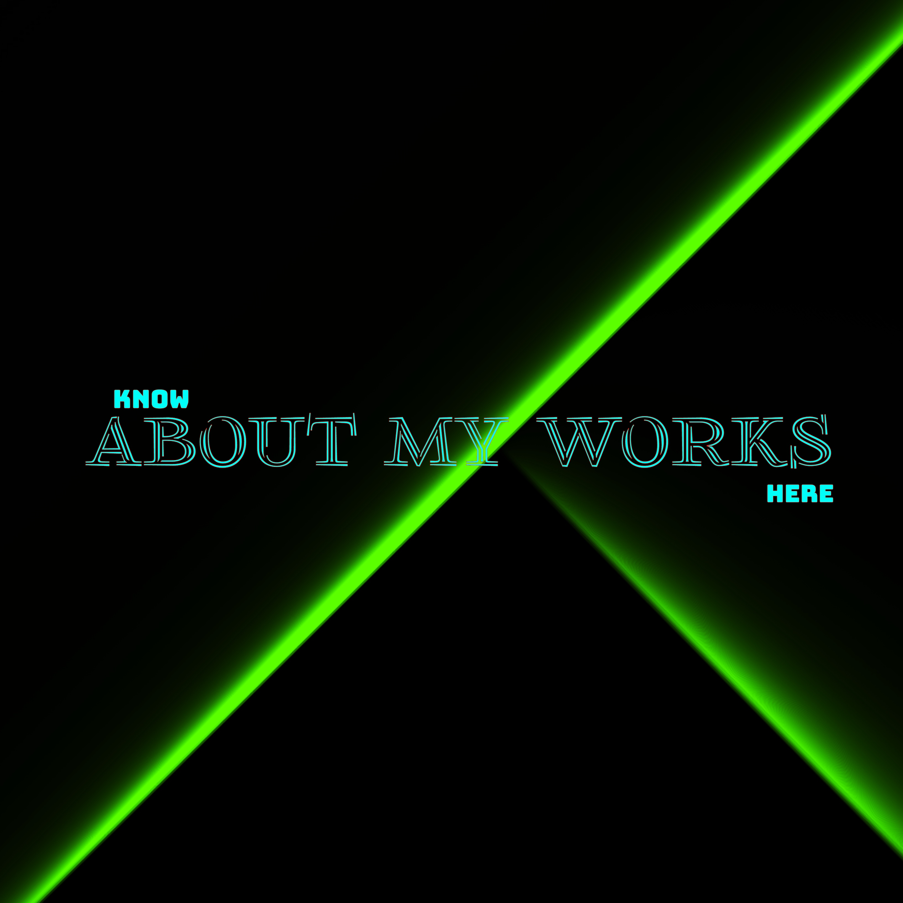

Christo John Kalapurackal
Hello guys...
Welocome to my very own first personal website designed by your truly
Christo John
....
So my name is Christo John, Age 18 as of 2022.Keralite as origin. Computer Application student as role...
